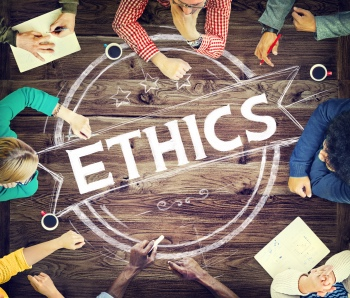

Social media refers to online platforms and websites that allow users to create and share content, as well as engage in social networking. These platforms enable individuals to connect with friends, family, colleagues, and even strangers from around the world. sers can share various types of content such as text, photos, videos, links, and more. Popular social media platforms include Facebook, Twitter, Instagram, LinkedIn, Snapchat, and TikTok, among others.
¿what are copyrights?
Copyrights are legal protections granted to creators of original works, such as writings, music, art, and software. They give creators exclusive rights to reproduce, distribute, perform, and display their works. Copyright protection automatically applies when a work is created and fixed in a tangible form. It allows creators to control how their works are used and to financially benefit from their creations.
¿what are ethics?

Ethics refers to principles of conduct that govern what is considered right and wrong behavior in a particular context or society. It involves evaluating actions and decisions based on moral values such as honesty, fairness, integrity, and respect for others. Ethics guide individuals and organizations in making choices that are morally acceptable and contribute to the well-being of society.
Summary
Ethics: Ethics are principles that govern what is considered right and wrong behavior in a particular context or society. Copyrights: Copyrights are legal protections granted to creators of original works, such as writings, music, art, and software. Social Media: Social media refers to online platforms and websites that allow users to create and share content, as well as engage in social networking.